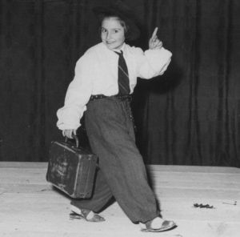
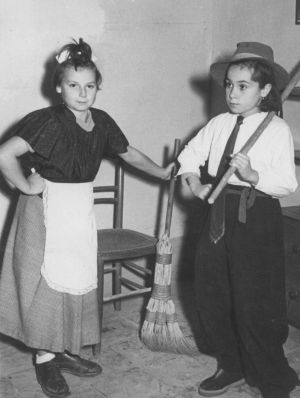

Quercegrossa (Ricordi e memorie)
CAPITOLO X - SCUOLA
La Sig. Grassi e le sue recite
Indice Capitoli
Introduzione e Indice Scuola
Le commedie della signora Grassi
Una delle positive e feconde qualità riconosciute alla signora Grassi era la facilità con la quale inventava e componeva filastrocche, poesie e canzoncine per ogni occasione, realizzando piccole recite, spettacoli organizzati o improvvisati, trascinando e facendo partecipare soprattutto le alunne in quello che possiamo definire lo "studio alternativo".
Alla sua vena poetica si deve il testo della piacevole canzoncina "Quercegrossa frazione ridente", e anche l’altra "Fra Siena e Castellina". A lei va il merito di aver realizzato il primo presepio vivente con Vanda Castagnini nelle vesti della Madonna, e un bambino di S. Stefano fece S. Giuseppe: un quadro originale proposto nell'aula scolastica e visitato da tanti incuriositi genitori. Tra il 1950 e il 1955 circa, le sue recite, ebbero un successo strepitoso, e si rappresentavano nei nuovi locali parrocchiali. Fu una forma di varietà con balletti, canti e scenette diverse interpretate dalle adolescenti del tempo. Da grande regista curava meticolosamente sia la recita sia la scenografia. A tal proposito chiamava espressamente un parente da Roma, il quale realizzava uno stupendo scenario con velluto rosso per dare risalto e pregio allo spettacolo. L’attento e numeroso pubblico, ben accomodato nelle poltroncine della sala cinematografica, trovava in queste ottime e simpatiche commedie un divertente passatempo. I ricordi, numerosi e nostalgici, fissati su fotografie, ci riportano su quel lontano palcoscenico. Per queste recite la signora Grassi si avvalse di un gruppo di alunne in gamba e ligie alle sue istruzioni, le quali interpretarono con grazia e spigliatezza i ruoli loro assegnati: Carla Buti, Annunziata Mori, Marcella Nencioni, Mirella Masti, Giorgina Rossi, Marcella Merlotti, Luisa Mori, Anna Tatini, Gabriella Brogi, Bruna Castagnini Graziella e Lucia Starnini, Lorenza Mori, Mirella Guarducci, Anna Carletti e Giuliana Mencherini. Fra i maschi si ricordano Marcello Landi, Bernardino Castagnini, Giulio Nencioni e Giancarlo Brogi.
Le successive generazioni scolastiche non troveranno gradimento presso la maestra e l'attività sarà ridimensionata e ridotta a modeste declamazioni tenute nell'aula scolastica, come si può vedere dalla successiva foto del 1960/61 dove Luciano Vettori interpreta una scenetta che suscita le risate dei presenti.
Solo dopo alcuni anni, nel nuovo complesso scolastico, la sig. Grassi coadiuvata dalle insegnanti, riprenderà le recite senza tuttavia toccare i fasti passati. Vi presenzieranno esclusivamente alunni e familiari e resteranno confinate nell’ambito scolastico.
Le recite scolastiche, come facilmente si intuisce, si inserirono con successo nell'attività ricreativa paesana degli anni Cinquanta fino a diventare uno degli appuntamenti più attesi delle feste natalizie. Erano precedute da un periodo di prove tenute ovunque: in aula, nel boschetto dell'Arginano, ai Cipressini, sempre sotto le severa direzione della signora Grassi, la quale dettava le regole e tutti si adeguavano: tu fai questo, tu fai quello; tu dici questo tu dici quest'altro.
Non essendoci rimasto nessun testo scritto della sua abbondante produzione solo le battute e le strofe più significative sono impresse nella memoria di quei piccoli attori e del pubblico che così ce li hanno tramandati a cominciare dal famoso canto “Quercegrossa frazione ridente” divenuta pietra miliare nella storia del paese:
Quercegrossa frazione ridente
dove vive di gran brava gente
gente buona, gentile a modino
cominciando da don Ottorino.
Rit. La canzon filulirulin filulirurella
La canzon filulirulin filulirurella
La canzon filuliruli filulirulà
Quercegrossa eccola là.
Sotto un tiglio che è una meraviglia
c'è una grande e festosa famiglia
casa Mori con dieci figlioli
un paese lo forman da soli.
Nella nostra ridente frazione
Dante Brogi ci ha un bel bottegone
dove vende ogni sorta di oggetti
dai bottoni, tegami e confetti.
A sinistra della nostra strada
troverete il negozio di Ada
dove vende di sale e tabacchi
di quattrini ne ha pieni più sacchi
Non ci mancan nè chiodi e bulletti
per le scarpe ci abbiam Cappelletti
Le risuola, sa fare benone
ti ci appiccica solo il cartone.
Anche a Londra, New York e Berlino
noto è il nome del gran Brunettino
è un poeta più grande di Dante.
versi e rime ne ha scritte già tante.
Alda Losi facciamo un inchino
tutti i giorni ci lustra il banchino
ce lo lustra, le viene il fiatone
ci consuma granate e sapone.
Altrettanto apprezzata fu la seguente canzone ripresa da una melodia molto in voga in quegli anni:
Fra Siena e Castellina
In mezzo a due colline
Ci vive un paesino
Piccino ma gentile
Dove vivono operai contadini e minator
Tutta gente modesta col cuore da signor
Ritornello: Cicci che bel, ue ue ue
Cicci che bel, ue ue ue
Cicci che bel, ue ue ue
E avanti in dre, avanti in dre, che bel divertimento
E avanti in dre, avanti in dre, la vita è tutta qua.
Quand' ero più piccina
la vecchia zia Velina
in cambio di un inchino
mi dava mezzalira
allora me ne andavo
di corsa sul bastion
e sul cavallo a dondolo cantavo una canzone
e sul cavallo a dondolo cantavo una canzon - Rit.
Quand'ero più grandina
e marinando a scuola
nel pubblico giardino
conobbi un bel biondino
allora il mio cuore
di colpo s'infiammo
e sul cavallo a dondolo cantavo una canzone
e sul cavallo a dondolo cantavo una canzon - Rit.
Grandi risate con il monologo di Marcello Landi che interpretava l'empirico don Cicisbeo:
A voi presentomi sono il dottore
curo i malati a tutte l'ore
quelli sani … li fo guarire
quelli malati … li fo morire.
Don Cicisbetico aveva un corno
che gli cresceva di giorno in giorno
col mio rimedio efficacissimo
presto - prestissimo … l'altro spuntò.
Donna Antonetta aveva un tumore
e subito corse dal gran dottore
col mio rimedio efficacissimo
presto - prestissimo … crepò e morì.
Don Celestino si era incurvato
cercò il dottore per essere drizzato
col mio rimedio efficacissimo
presto - prestissimo … lui si stroncò.
A voi presenti Signori e Signore
Venite presto dal gran dottore
col mio rimedio efficacissimo
presto - prestissimo … vi spaccherò.
Tanti applausi per Anna Carletti nella sua "lattaia" e il ritornello venne canticchiato per molti anni a seguire:
Quando la mattina, al paese scendo
il mio latte vendo, senza chiasso far.
Tutti nel vedermi, corrono vicino
tazza e pentolino, vengono a colmar.
Il mio latte è rinfrescante, già
molto bene alla salute fa.
Su venite in tutta fretta
che c'è qui l'Annetta, a litri ve ne dà.
Il mio latte fresco, dolce e profumato
sa d'erba di prato, venitelo a gustar.
Tutti a me dicon, con la voce gaia
vieni qua lattaia, fammi ristorar.
Grande ilarità invece in una commedia dove il coro ripeteva il miagolare del gatto, in un ameno testo che richiamava una lieta giornata in campagna:
Splende ridente, il lieto sol di maggio,
sbocciano i prati e sgorga la risata
e lieta giornata, è festa del villaggio.
Rit. Su paesani cantiamo e danziam
su, su cantiam, su, su danziam.
Tutti i gatti gnao, guao, guao, gnao.
Posa la vanga e cessa dal lavoro
vestiti a festa e vieni sulla piazza
grida e schiamazza un allegro coro.
Negli ultimi anni del suo insegnamento la signora Grassi non accusò certamente un venir meno della sua vena poetica come testimonia la recita di Margherita Pianigiani per la quale la maestra personalizzò il ruolo della fioraia. E' questa forse l'ultima composizione dell'insegnante, verso la quale non possiamo esimerci dal rendere i dovuti apprezzamenti per la sua arte:
Ecco, arriva la fioraia
tutta fresca tutta gaia
con le rose e le viole
Chi le vuole?
chi le vuole?
Chi la vuole la violetta
nata ora su l'erbetta?
e la primula dorata
così fine e delicata
fiori, fiori freschi e belli
che son nati sui ruscelli
e si bella e si gaia
Margherita la fioraia.
Un’altra interpretazione di Carla Buti in “Paesanella”, quando vestita da contadinella si pavoneggiava mentre il coro cantava:
Quando scendi giù dai monti / ti sorridono le fonti, perchè sei bella - paesanella
Non ti chiamano Mari e neppure Mariù / ma il tuo nome è Maria - paesanella
Tu non porti le ciglia rivolte all'insù / ma il tuo sguardo vale di più - paesanella
E la sera all'ombra del chiaro lunar / è così dolce cantar paesanella.
Quando scendi dai tuoi monti, ti sorridono le fonti, paesanella
Sognano i cuori un tuo bacio d’amor, paesanella.
Le sigaraie del 1950. Carla Buti la primadonna, con, da destra nella foto: Annunziata Mori, Marcella Nencioni, Mirella Masti, Giorgina Rossi, la detta Carla, Marcella Merlotti, Luisa Mori, Anna Tatini, Gabriella Brogi.
Della recita si ricordano poche parole sull’aria della Bella Gigogin: “A quindicianni quando fumai, mi ubriacai, mi ubriacai... Oro non provo nessun dolore...”.
I marinaretti. Da destra: Giorgina Rossi,Graziella Starnini, Anna Tatini, Bruna Castagnini, Luisa Mori e Carla Buti.
Le fioraie. Recita del 1953/54.
Recita del 1952. Da destra in prima fila: Lorenza Mori, dietro di lei: Marcella Merlotti. Nella fila di sinistra: Giuliana Mencherini. Al centro sullo sfondo: Luisa Mori. C’era anche una Fiaschi della Staggia.
1953. Le fioraie. Da destra: Anna Carletti, Mirella Guarducci e Lorenza Mori.
C’eravamo tanto amati, forse un anno o forse più, c’eravamo poi lasciati... Sulle parole di questa famosa canzone iniziava il nostalgico dialogo dei due vecchietti in prima fila, impersonati da Luisa Mori e Carla Buti (nelle vesti della nonna). Dietro di loro Anna Tatini (a destra) e Marcella Nencioni accennavano dei passi di danza cantando una breve frase rievocativa:
Ti ricordi vecchio mio
di quel tempo che ormai fu.
Mi ricordo e penso anch'io
alla nostra gioventù.
Fu a quel ballo mascherato
dove il fato ci portò.
A quel ballo ti ho incontrtato
e la storia cominciò.
(Maschere) Oh che bella mascherina
che simpatico Pierrot
vuol ballare signorina
molto lieta mio signor.
Allor pian piano ti presi la mano
mentre Cupido rideva lontano
oh, come è bella la vita stasera,
che tempo era, che tempo è.
Oramai siam vecchiarelli,
pian di acciacchi e di dolor
son passati i tempi belli,
delle maschere e dei fior.
Lo scialletto e la poltrona
il tabacco ed il giornal
lo scaldino e la corona
papalina e i grossi occhial
Or che l’inverno è ormai arrivato
niente non resta del nostro passato
la nostra vita sia sempre serena
che tempo era che tempo è.

Giorgina Rossi, mentre interpreta un distinto signore in viaggio (notare i sandali ai piedi).
Frammenti del testo:
“Voglio andare nel Tonchino...in quel paese parlan così.
Voglio andare nel...

Bruna Castagnini e Luisa Mori, moglie e marito:
"Che si fa signor marito
è da tempo che si pena
non si pranza non si cena
non ne posso proprio più.
Ero si grassa
qualcuno lo dice
sembro un alice
guardami tu".
Il testo che potrebbe essere una ottima aria da musicare alla maniera di Mozart ci dà la misura del talento della signora Grassi.
Dal Giappone siam venute fino qua. Siamo bambole viventi in verità. L'ombrellino manovriamo e l'inchino più perfetto sappiam far. Piccine, carine, del Giappone bamboline, pien di grazia e di beltà.
Le giapponesine. Da destra: Lucia Starnini, Luisa Carusi, Mirella Guarducci, Anna Carletti e Marcella Merlotti.
Luciano Vettori, nel 1961, recita davanti a un pubblico di divertite mamme, le maestre e, appoggiata alla parete, con gli occhiali, la bidella Ada Nencioni.
Il professionale costume da artista indossato da Andrea Nencioni, Roberto Sestini, Stefano Socci, Silvano Sestini e Marco Carli in “La Bella Epoque” del 1964/65.
Fabrizio Papi, a sinistra, nei panni dell’olandesina, con Massimo Dragoni.
Siamo ormai agli anni Settanta e le recite scolastiche continuano all’interno della scuola.
Un ricordo della maestra Aglietti (in piedi con la cartellina bianca in braccio). Le tre alunne al centro, Giovanna, Beatrice e Cristina recitano con Sonia Carletti.
Nel 1964/65, gli alunni, accompagnati da maestre e genitori, recitarono al Centro didattico della Scuola Peruzzi, alla presenza del Direttore e di tutto il corpo insegnante. La foto è scomposta in due immagini per migliorarne la visibilità.
In questa pagina gli alunni di Quercegrossa sul palcoscenico del Centro didattico nella recita “La bandiera tricolore”.
|